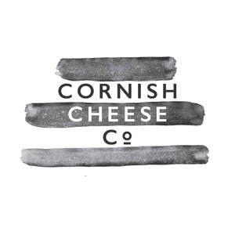
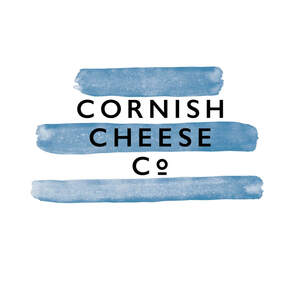
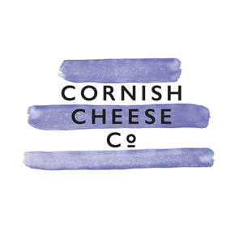
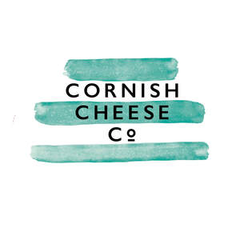
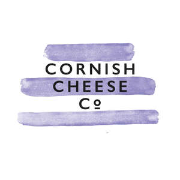
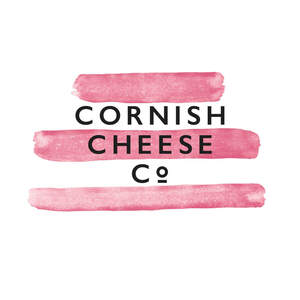

Trade Mark Journal No.2026/007 13 February 2026
UK00004198994 6 May 2025 (16,29,35)
Mark 1

Mark 2

Mark 3

Mark 4

Mark 5

Mark 6

- Class 16
- Packaging materials; Packaging materials made of cardboard; Plastic materials for packaging; Gift packaging; Gift wrap; Gift boxes; Gift boxes made of cardboard; Gift cards; Gift vouchers; Gift bags.
- Class 29
- Cheeses; Cheese; Cheese products; Cheddar cheese; Goat cheese; Cream cheese; Cottage cheese; Cheese fondue; Sheep cheese; Blue cheese; Ripened cheese; Smoked cheese; Mould-ripened cheese; White cheese; Processed cheese; Cheese spreads; Cheese mixtures; Truffle cheeses; Soft-ripened cheeses; Hard cheese; Ripened cheeses; Blended cheese; Soft white cheese; Low fat cheese; Cheese dips; Cheese containing herbs; Cheese containing spices; Cheese-based snack food; Charcuterie; Dairy products; Dairy spreads; Dairy desserts; Milk products; Paté; Cheese Paté; Vegetable Paté.
- Class 35
- Retail services in relation to cheeses, cheese, cheddar cheese, goat cheese, cream cheese, cottage cheese, cheese fondue, sheep cheese, blue cheese, ripened cheese, smoked cheese, mould-ripened cheese, white cheese, processed cheese, cheese spreads, cheese mixtures, truffle cheeses, soft-ripened cheeses, hard cheese, ripened cheeses, blended cheese, soft white cheese, low fat cheese, cheese dips, cheese containing herbs, cheese containing spices, cheese-based snack food, cheese products, charcuterie, dairy products, dairy spreads, dairy desserts, milk products, paté, cheese paté, vegetable paté, savoury sauces, chutneys, chutney, relishes, relish, pickle relish, savory biscuits, biscuits for cheese, crispbread snacks, crackers, alcoholic beverages, Ale, pale ale, IPA, beer, craft beer, lager, gin, wine, sparkling wine, white wine, red wine, rosé wine.
The mark is proceeding because of distinctiveness acquired through use.
The Cornish Cheese Company Limited
Representative: Stephens Scown LLP